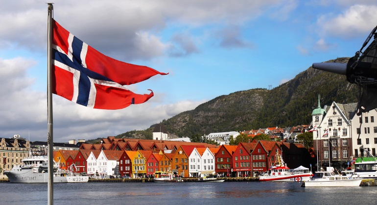

Japón es una nación insular del océano Pacífico con densas ciudades, palacios imperiales, parques nacionales montañosos y
miles de santuarios y templos.
Venezuela es un país de la costa norte de América del Sur, con diversas atracciones naturales. A lo largo de su costa en el Caribe,
hay islas turísticas tropicales, entre ellas la Isla de Margarita y el archipiélago Los Roques.
México es un país entre los Estados Unidos y América Central, conocido por las playas en el Pacífico y el golfo de México,
y su diverso paisaje de montañas, desiertos y selvas. Las ruinas antiguas, como Teotihuacán y la ciudad maya de Chichén Itzá,
se distribuyen por el país, al igual que las ciudades de la época colonial española. En la capital Ciudad de México, las elegantes
tiendas, los famosos museos y los restaurantes gourmet son parte de la vida moderna.
Italia, país europeo con una larga costa mediterránea, influyó considerablemente en la cultura y la cocina occidental.
Su capital, Roma, es hogar del Vaticano, de ruinas antiguas y de obras de arte emblemáticas. Otras ciudades importantes son
Florencia, con obras maestras del renacimiento, como el "David" de Miguel Ángel y el Domo de Brunelleschi; Venecia, la ciudad de
los canales; y Milán, la capital italiana de la moda.

Noruega es un país escandinavo que incluye montañas, glaciares y profundos fiordos costeros. Oslo, su capital, es una ciudad
de áreas verdes y museos. En el Museo de barcos vikingos de Oslo, se muestran navíos vikingos preservados del siglo IX. Bergen,
con coloridas casas de madera, es el punto de partida de los cruceros hacia el sorprendente fiordo de Sogn. Noruega también es
famosa por la pesca, el excursionismo y el esquí, especialmente en el centro olímpico Lillehammer.